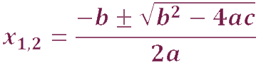

Francois Viéte
(1540-1603)
francia matematikus
Életéről
Foglalkozását tekintve jogász volt. Fiatal korában támadt egy ötlete új csillagászati elmélethez, amely a kopernikuszi rendszert fejlesztette volna tovább. Ennek érdekében kezdett el a matematikával foglalkozni. Tehetséges emberként kezdetben jogászként is sikeres pályája volt. III. Henrik, majd IV. Henrik francia király ügyésze és tanácsosa volt. Később kegyvesztett lett.
Munkásságáról
- Kezdetben elsősorban trigonometriával foglalkozott.
- 1584 és 1589 között, kegyvesztettsége idején írta meg fő művét az In artem analyticam isagoge-t. (Bevezetés az analízis tudományába).
- Ez egy befejezetlensége ellenére is hatalmas munka, benne új algebrai megoldásokkal. Az egyenletmegoldás általános módszereit kereste. Ezért a Diophantosz által megkezdett úton az algebrai jelölésrendszert fejlesztette tovább.
- Igyekezett szimbólumokkal dolgozni, az együtthatók helyett is betűket használt. Ezek segítségével formulát tudott felírni a másodfokú egyenletek megoldására.
- A harmadfokú egyenletek megoldásával is foglalkozott.
- Igen jelentős eredménye a végtelen sorozatok felfedezése.
- Másodfokú egyenletek gyökök és együtthatók kapcsolatát megadó képletek, a Viete-formulák is őrzik a nevét.
A másodfokú egyenlet
A másodfokú egyenlet általános alakja ax2+bx+c=0. Megoldó képlet:
Ahol a gyök alatt álló kifejezés a diszkrimináns (D), ami meghatározza a valós gyökök számát.
Ha D<0, akkor nincs megoldás, ha D=0, akkor egy megoldás, ha D>0, akkor két megoldás van.

A valós gyökök száma: